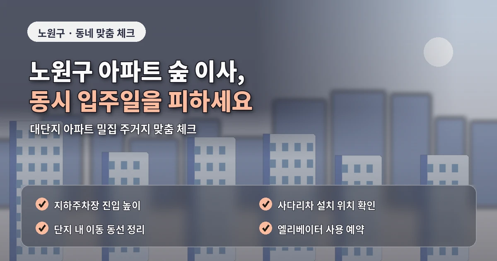
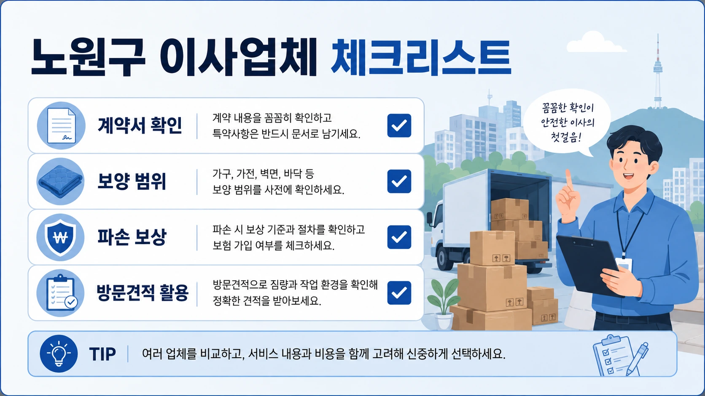

서울 노원구포장이사추천 대단지 비용 체크
노원구 포장이사는
대단지 아파트와 가족 단위 이사 수요가 많아
견적을 받을 때 확인할 내용이 비교적 많습니다.
상계동, 중계동, 하계동, 월계동은
아파트 단지가 넓게 형성되어 있고,
학군과 생활권에 따라
이사 시기가 특정 기간에 몰릴 수 있습니다.

노원구 포장이사 비용은
평수와 짐의 양도 중요하지만
단지 내 동선과 엘리베이터 예약 여부가
큰 영향을 줄 수 있습니다.
비용과 견적이 달라지는 핵심 기준
동 입구에서 차량이 가까이 설 수 있는지,
지하주차장 높이 제한이 있는지,
화물 엘리베이터 사용이 가능한지,
사다리차 설치가 가능한지
먼저 확인해야 합니다.
대단지 아파트에서는
관리사무소 이사 예약이 필수인 경우가 많습니다.
이사 가능 시간이 정해져 있거나
동시 이사 세대가 많으면
원하는 시간에 작업을 진행하기 어려울 수 있습니다.
따라서 날짜가 확정되면
업체 상담과 함께
관리사무소 예약을 빠르게 진행하는 것이 좋습니다.
노원구 포장이사 업체추천을 볼 때는
가족 이사 경험이 있는지 확인하는 것도 도움이 됩니다.
업체 비교 전 확인해야 할 사항
가족 단위 이사는
의류, 책, 주방용품, 아이 물건,
가전과 가구가 다양하게 섞여 있어
포장 순서와 정리 방식이 중요합니다.
업체가 어떤 방식으로 방별 포장을 하는지,
박스 표기를 어떻게 하는지,
도착지에서 배치를 어디까지 해주는지 확인해야 합니다.
포장이사 비교견적은
총액보다 포함 항목을 먼저 봐야 합니다.
옷장 박스 제공,
주방 포장,
침대와 장롱 분해 조립,
냉장고 정리,
가전 보호,
바닥 보양,
파손 보상 기준이 포함되어 있는지 확인해야 합니다.
처음 견적이 낮아도
이 항목이 빠져 있으면
이사 후 만족도가 낮아질 수 있습니다.

노원구에서는 학교 일정과
입주 일정도 함께 고려해야 합니다.
추가비용을 줄이는 준비 방법
방학 전후나 학기 시작 전에는
이사 문의가 늘어날 수 있고,
주말 예약이 빨리 마감될 수 있습니다.
일정 조정이 가능하다면
평일이나 월중 날짜를 함께 문의하는 것이 좋습니다.
추가비용을 줄이려면
짐 정리가 가장 기본입니다.
사용하지 않는 책,
오래된 가구,
고장 난 소형가전,
입지 않는 의류를 미리 정리하면
박스 수와 작업 시간이 줄어들 수 있습니다.
가져갈 물건과 버릴 물건을 구분하면
견적 상담도 훨씬 정확해집니다.
계약 전에는
최종 견적서에 작업 인원,
차량 대수,
사다리차 여부,
엘리베이터 사용 조건,
추가비 발생 기준,
보상 기준이 명확히 적혀 있는지 확인해야 합니다.
계약 전 마지막 체크포인트
노원구 포장이사는
단지 규모와 가족 짐의 양을 고려한
정확한 비교가 중요합니다.
비용만 보고 고르기보다
일정 조율, 포장 범위,
작업 인원, 보상 기준을 함께 확인하면
더 안정적인 선택이 가능합니다.
노원구 가족 이사에서 중요한 정리 기준
노원구는 가족 단위 이사가 많은 지역이라
짐의 종류가 다양하게 나오는 경우가 많습니다.
책, 의류, 주방용품, 아이 물건, 대형가전이 함께 있으면
포장 시간과 박스 수가 예상보다 늘어날 수 있습니다.
견적 전에는 방별로 짐을 나누어 정리해두면 좋습니다.
안방, 아이방, 주방, 거실, 베란다 물건을 구분하면
업체가 포장 순서와 인력 배치를 더 정확히 잡을 수 있습니다.
또한 도착지에서 어느 방에 어떤 짐을 둘지도 미리 정하면
이사 후 정리 시간이 줄어듭니다.
노원구 포장이사추천을 볼 때는
단지 이사 경험과 가족 이사 경험을 함께 확인하는 것이 좋습니다.
대단지 아파트는 엘리베이터 예약이 핵심이고,
가족 이사는 짐 분류와 도착지 배치가 만족도에 큰 영향을 줍니다.
노원구 포장이사는 단지 규모가 큰 만큼
작업 전 안내와 동선 확인이 중요합니다.
동 입구에서 차량까지의 거리, 엘리베이터 위치,
관리사무소의 보양 기준을 미리 확인하면
이사 당일 작업 흐름이 훨씬 안정적으로 이어질 수 있습니다.
노원구 포장이사 견적을 비교할 때는
가족 구성원별 짐의 양을 나누어 설명하는 것이 좋습니다.
아이방, 주방, 거실, 베란다 짐을 따로 정리하면
포장 순서와 도착지 배치가 더 정확하게 잡힙니다.
노원구는 단지 규모가 큰 곳이 많아
이사 당일 동선 안내를 가족과 업체가 함께 공유하는 것이 좋습니다.
이렇게 하면 작업자 이동과 물건 배치가 더 원활해집니다.
작업 전 관리사무소와 예약 시간을 다시 확인하면 좋습니다.
자주 묻는 질문
A. 엘리베이터 예약, 차량 동선, 관리사무소 규정을 먼저 확인해야 합니다.
A. 짐의 종류와 박스 수가 많으면 작업 인원과 시간이 늘어날 수 있습니다.
A. 이사 전 불필요한 책, 의류, 가전, 가구를 정리하는 것이 좋습니다.